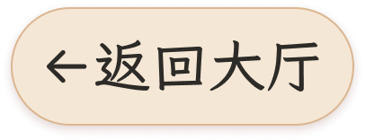
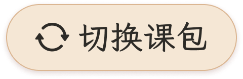

象
小象语文
课文排版工作台
草稿自动保存在本机
实时预览
预览比例
原稿
16:9
21:9
4:3
完整页面
文字特写
放大预览 ⤢
课节目录 · 整体效果
1756 × 1080


第
2
课
/
共
24
课
第
1
课
司马光
第
2
课
守株待兔
第
3
课
精卫填海
第
4
课
王戎不取道旁李
第
5
课
囊萤夜读
正在排版…
显示安全区
已达到最小字号，可在正文区域上下滑动查看全文。
字
一字一音，所见即所得
左侧输入与换行会同步到页面。选中单字或一段文字，即可添加、修改和移除拼音。
↗